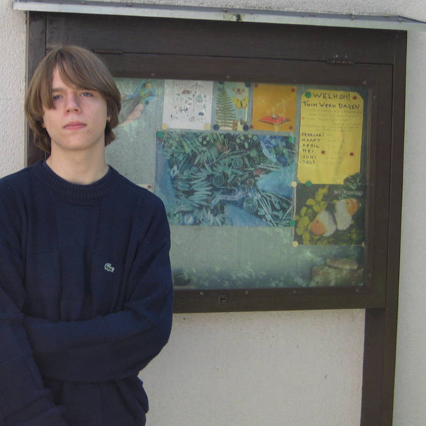

Bio & Contact
I am Sjoerd Willemsen! I am a multidisciplinary artist and musician based in Arnhem, Netherlands. Currently a third year student at the ArtEZ University of the Arts in Arnhem, where I am studying Design Art & Technology.
I like making art with computers, especially making kinetic sculptures is my thing. I am very interested in human or animal forms in the robotic arts. Also, I am a DJ and music producer, making music ranging from electro music to acoustic emo kind of stuff.
Email: andersdanjij925@gmail.com
Instagram: @machiavelli_margiela
Part of: Electronic Intermission
